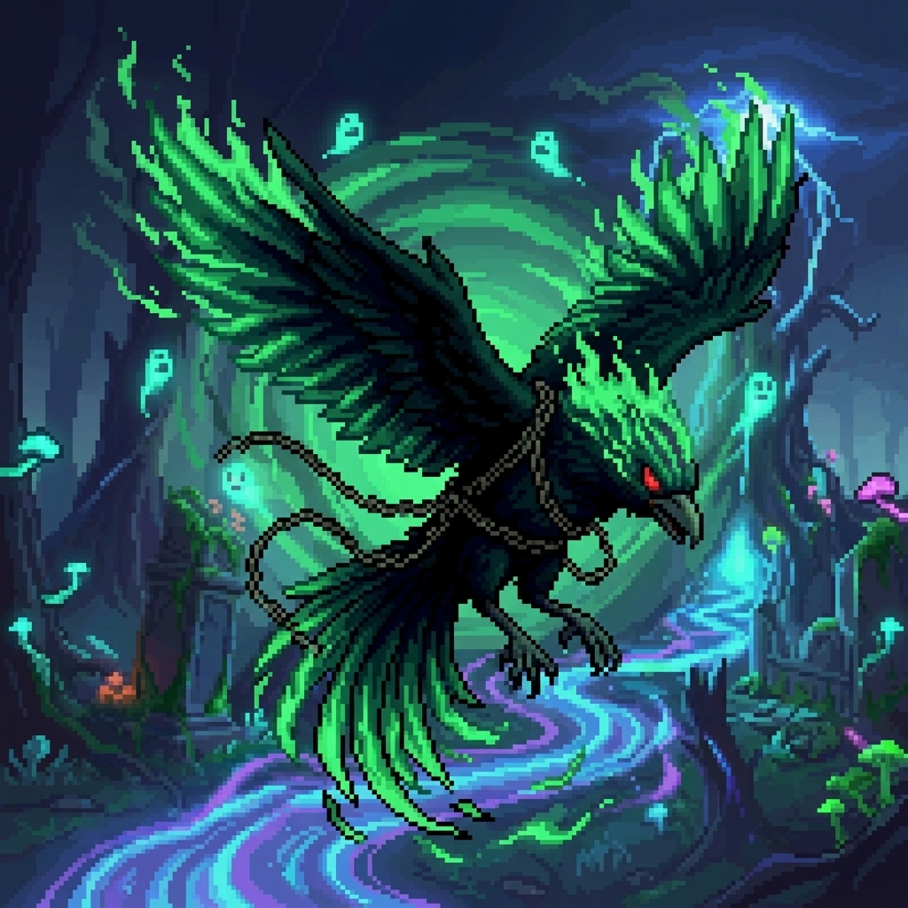

當空翼軍團的首領「熾焰」巡弋至幽魂森林的上空時，他那原本灼熱的生命脈動與森林中靜謐的暗影產生了奇蹟般的共鳴。熾焰並未排斥這股陰冷的氣息，反而張開雙翼，以自身體內的太古龍焰為爐，將無數徘徊的暗影幽魂納入羽翼之中。
在火與影的極致交融下，靈火幽羽·熾焰就此誕生。
他周身燃燒的不再是焚毀萬物的烈陽之火，而是能直接灼燒靈魂、呈現冷冽青色的冥道靈火。每一根羽毛都刻印著幽魂的咒文，揮動間伴隨著如歌如訴的靈魂低語。現在的他，既是毀滅的使者，亦是引導亡靈的擺渡人。在克羅姆平原的勇士眼中，這道劃過天際的綠光不再僅是威脅，更是一種超越生死的絕對恐怖。
熾焰振翅撕裂虛空，喚醒沉睡在幽魂森林深處的「影蝕靈鳥」。這些靈鳥不再是純粹的火焰，而是具備靈魂追蹤與詛咒權能的怨靈體。當葬靈陣啟動，戰場上的空間將被無數燃燒的古老靈魂填滿，依循著四種不同的「冥冥路徑」進行生命與靈魂的無差別收割。任何被靈火觸及之處，皆將化為永恆的荒蕪。
描述： 將幽魂森林積累百年的怨戾化作無形之刃，橫切生與死的界線。這不再是單純的火焰，而是收割靈魂的冥河潮汐。
視覺感： 數不清的「影蝕靈鳥」被召喚。它們成群呈水平直線列陣，形成一道道封死橫向活動空間的「靈火之牆」。
描述： 這是自幽冥穹頂垂下的審判信標，將妄圖反抗者的靈魂生生釘死於暗影地脈之中。
視覺感： 靈鳥由高空呈 90 度垂直俯衝而下，落點精準且固定。在畫面上形成數道平行的火焰立柱，迫使繼承者必須在極窄的縫隙中屏息移動，一旦觸碰便會被靈魂鎖定。
描述： 影蝕靈鳥在混沌的殘響中狂亂起舞。這是不按理律律動的死亡之舞，當靈火在虛實之間閃爍，汝之靈魂將在無盡的恐懼中窒息。
視覺感： 大量的靈鳥以不穩定的高度、參差不齊的速度從兩側突襲。在戰場上交織出混亂且致命的火網。
描述： 影蝕靈鳥如雨點般灑向戰場的每個角落。大地將在落魂雨的洗禮下化為永恆的荒蕪。
視覺感： 靈鳥由上方各個角落隨機現身，成群結隊地、以不規則的頻率紛紛墜落。密集的打擊點將地面封鎖。
描述： 「將無數渴求回歸陽世的怨靈壓縮至一線，對生者的領域進行絕對的侵略。在綠色靈火奔湧的水平線上，只有凋零與死寂才是唯一的永恆。」
視覺感： 熾焰 猛然向前方揮動那對巨大的綠火幽羽。隨即，一道噴湧著慘綠色光芒、火浪中無數鬼臉掙扎咆哮的火焰衝擊，沿著地面橫切而出。這道靈火浪潮以固定的直線軌道掃蕩前方，空氣中充滿了淒厲的靈魂尖嘯聲，令聽者膽寒。
描述： 將無數帶有詛咒的冥羽化作切割次元的死線，在瞬息之間貫穿所有生者的防線。這是來自九幽的問候，在綠色的光痕中，只有寂滅才是唯一的真理。
視覺感： 靈火幽羽猛烈振翅，發出刺耳的靈魂尖嘯。隨後，無數根燃燒著藍綠色詭譎靈火、拖著像素尾焰的亡靈羽毛匯聚成一道道密集的直線。